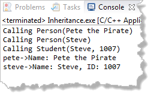

Implementing Student::toString()
Here's one possible implementation of Student::toString():
string Student::toString() const
{
return "Name: " + getName() // inherited member
+ ", ID: " + to_string(studentID);
}
While this works, it doesn't take advantage of the of the already-written toString() member function in the Person class; in the Student version of toString(), you're duplicating exactly the same code.
Is there some way to run the original version of toString(), and just add on the new parts you want, like the studentID? Is there some way you can combine inherited and overridden member functions?
Yes, there is.
 This course content is offered under a
CC
Attribution Non-Commercial license. Content in this course
can be considered under this license unless otherwise noted.
This course content is offered under a
CC
Attribution Non-Commercial license. Content in this course
can be considered under this license unless otherwise noted.